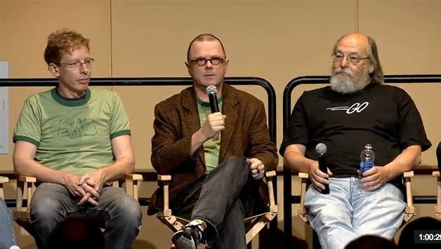
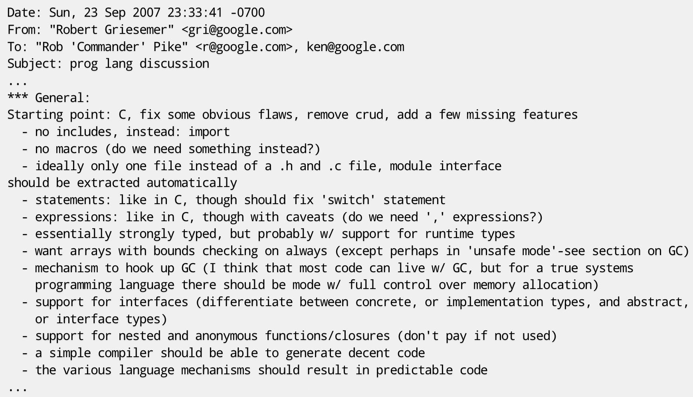
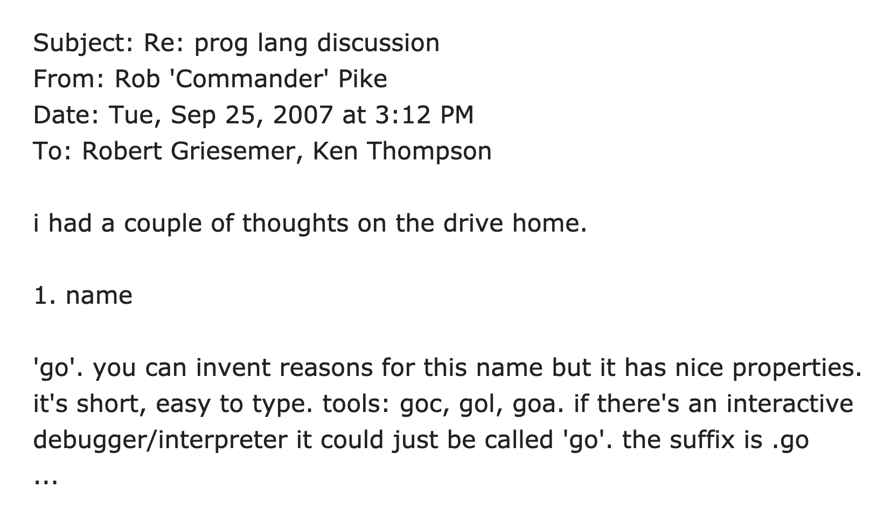
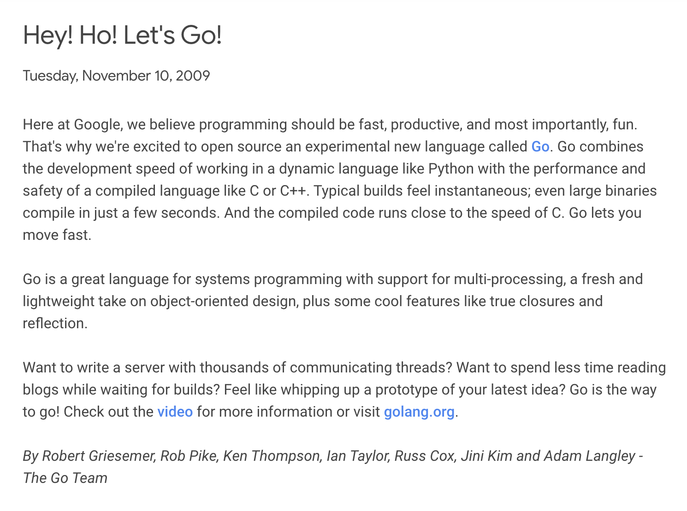
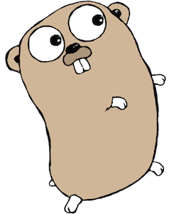
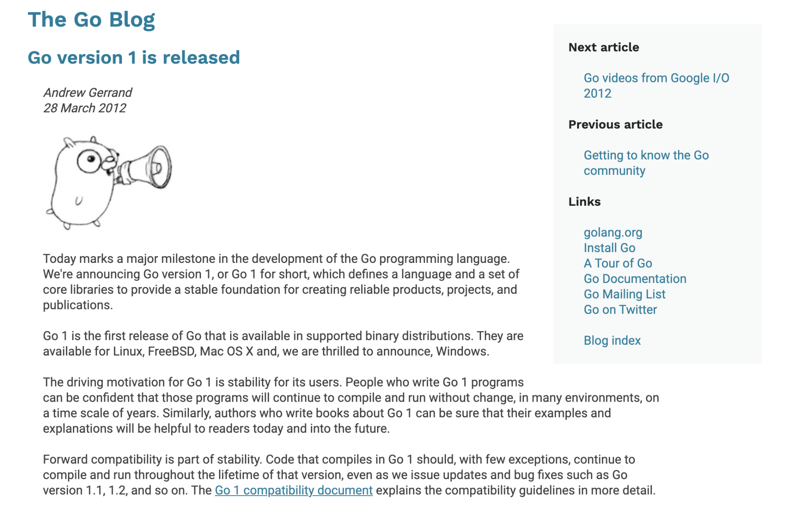
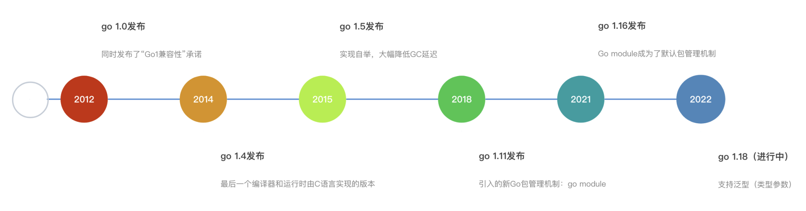
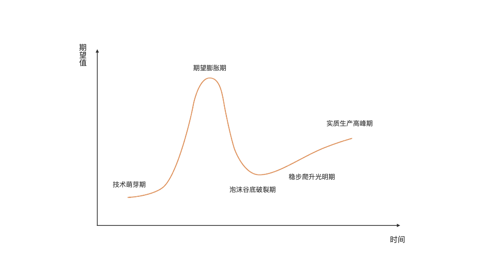
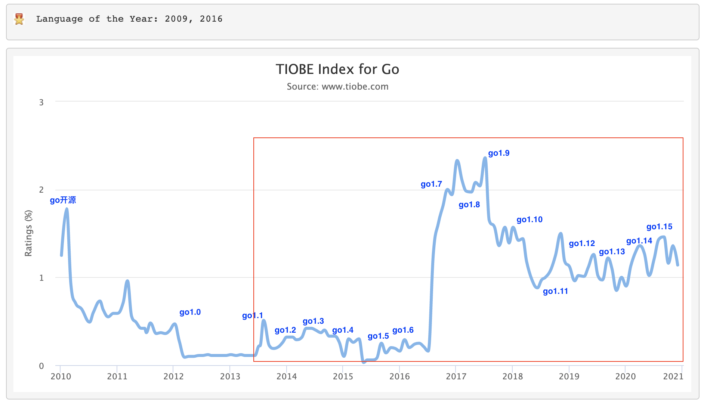

- 00 开篇词 这样入门Go，才能少走弯路.md
- 01 前世今生：你不得不了解的Go的历史和现状.md
- 02 拒绝“Hello and Bye”：Go语言的设计哲学是怎么一回事？.md
- 03 配好环境：选择一种最适合你的Go安装方法.md
- 04 初窥门径：一个Go程序的结构是怎样的？.md
- 05 标准先行：Go项目的布局标准是什么？.md
- 06 构建模式：Go是怎么解决包依赖管理问题的？.md
- 07 构建模式：Go Module的6类常规操作.md
- 08 入口函数与包初始化：搞清Go程序的执行次序.md
- 09 即学即练：构建一个Web服务就是这么简单.md
- 10 变量声明：静态语言有别于动态语言的重要特征.md
- 11 代码块与作用域：如何保证变量不会被遮蔽？.md
- 12 基本数据类型：Go原生支持的数值类型有哪些？.md
- 13 基本数据类型：为什么Go要原生支持字符串类型？.md
- 14 常量：Go在“常量”设计上的创新有哪些？.md
- 15 同构复合类型：从定长数组到变长切片.md
- 16 复合数据类型：原生map类型的实现机制是怎样的？.md
- 17 复合数据类型：用结构体建立对真实世界的抽象.md
- 18 控制结构：if的“快乐路径”原则.md
- 19 控制结构：Go的for循环，仅此一种.md
- 20 控制结构：Go中的switch语句有哪些变化？.md
- 21 函数：请叫我“一等公民”.md
- 22 函数：怎么结合多返回值进行错误处理？.md
- 23 函数：怎么让函数更简洁健壮？.md
- 24 方法：理解“方法”的本质.md
- 25 方法：方法集合与如何选择receiver类型？.md
- 26 方法：如何用类型嵌入模拟实现“继承”？.md
- 27 即学即练：跟踪函数调用链，理解代码更直观.md
- 28 接口：接口即契约.md
- 29 接口：为什么nil接口不等于nil？.md
- 30 接口：Go中最强大的魔法.md
- 31 并发：Go的并发方案实现方案是怎样的？.md
- 32 并发：聊聊Goroutine调度器的原理.md
- 33 并发：小channel中蕴含大智慧.md
- 34 并发：如何使用共享变量？.md
- 35 即学即练：如何实现一个轻量级线程池？.md
- 36 打稳根基：怎么实现一个TCP服务器？（上）.md
- 37 代码操练：怎么实现一个TCP服务器？（中）.md
- 38 成果优化：怎么实现一个TCP服务器？（下）.md
- 39 驯服泛型：了解类型参数.md
- 40 驯服泛型：定义泛型约束.md
- 41 驯服泛型：明确使用时机.md
- 元旦快乐 这是一份暂时停更的声明.md
- 加餐 作为Go Module的作者，你应该知道的几件事.md
- 加餐 如何拉取私有的Go Module？.md
- 加餐 我“私藏”的那些优质且权威的Go语言学习资料.md
- 加餐 聊聊Go 1.17版本的那些新特性.md
- 加餐 聊聊Go语言的指针.md
- 加餐 聊聊最近大热的Go泛型.md
- 大咖助阵 叶剑峰：Go语言中常用的那些代码优化点.md
- 大咖助阵 大明：Go泛型，泛了，但没有完全泛.md
- 大咖助阵 孔令飞：从小白到“老鸟”，我的Go语言进阶之路.md
- 大咖助阵 徐祥曦：从销售到分布式存储工程师，我与 Go 的故事.md
- 大咖助阵 曹春晖：聊聊 Go 语言的 GC 实现.md
- 大咖助阵 海纳：聊聊语言中的类型系统与泛型.md
- 期中测试 一起检验下你的学习成果吧.md
- 用户故事 罗杰：我的Go语言学习之路.md
- 结束语 和你一起迎接Go的黄金十年.md
- 结课测试 快来检验下你的学习成果吧！.md
01 前世今生：你不得不了解的Go的历史和现状
你好，我是Tony Bai。
今天是我们的第一堂课。第一堂课的开场，我要做的事很简单，就想跟你聊一聊Go语言的前世今生。
我一直认为，当你开始接触一门新语言的时候，你一定要去了解它的历史和现状。因为这样，你才能建立起对这门语言的整体认知，了解它未来的走向。而且，也能建立你学习的“安全感”，相信它能够给你带来足够的价值和收益，更加坚定地学习下去。
所以，在这一节课，我就来跟你聊聊Go的前世今生，讲清楚Go到底是一门怎么样的语言，Go又是怎么诞生的，它经历了怎样的历史演进，它的现状和未来又会如何？
无论后面你是否会选择学习Go语言，无论你是否会真正成为一名Go程序员，我都建议你先了解一下这些内容，它会让你对编程语言的发展有更进一步的理解。
首先，我们就来看看Go语言是怎么诞生的，这可以让你真实地了解Go的诞生缘由、设计目标，以及它究竟要解决哪些问题。
Go语言是怎样诞生的？
Go语言的创始人有三位，分别是图灵奖获得者、C语法联合发明人、Unix之父肯·汤普森（Ken Thompson），Plan 9操作系统领导者、UTF-8编码的最初设计者罗伯·派克（Rob Pike），以及Java的HotSpot虚拟机和Chrome浏览器的JavaScript V8引擎的设计者之一罗伯特·格瑞史莫（Robert Griesemer）。
他们可能都没有想到，他们三个人在2007年9月20日下午的一次普通讨论，就这么成为了计算机编程语言领域的一次著名历史事件，开启了一个新编程语言的历史。

那天下午，在谷歌山景城总部的那间办公室里，罗伯·派克启动了一个C++工程的编译构建。按照以往的经验判断，这次构建大约需要一个小时。利用这段时间，罗伯·派克和罗伯特·格瑞史莫、肯·汤普森坐在一处，交换了关于设计一门新编程语言的想法。
之所以有这种想法，是因为当时的谷歌内部主要使用C++语言构建各种系统，但C++的巨大复杂性、编译构建速度慢以及在编写服务端程序时对并发支持的不足，让三位大佬觉得十分不便，他们就想着设计一门新的语言。在他们的初步构想中，这门新语言应该是能够给程序员带来快乐、匹配未来硬件发展趋势并适合用来开发谷歌内部大规模网络服务程序的。
趁热打铁！在第一天的简短讨论后，第二天这三位大佬又在谷歌总部的“雅温得（Yaounde）”会议室里具体讨论了这门新语言的设计。会后罗伯特·格瑞史莫发出了一封题为“prog lang discussion”的电邮，对这门新编程语言的功能特性做了初步的归纳总结：

这封电邮对这门新编程语言的功能特性做了归纳总结。主要思路是，在C语言的基础上，修正一些明显的缺陷，删除一些被诟病较多的特性，增加一些缺失的功能，比如，使用import替代include、去掉宏、增加垃圾回收、支持接口等。这封电邮成为了这门新语言的第一版特性设计稿，三位大佬在这门语言的一些基础语法特性上达成了初步一致。
9月25日，罗伯·派克在一封回复电邮中把这门新编程语言命名为“go”：

在罗伯·派克的心目中，“go”这个单词短小、容易输入并且在组合其他字母后便可以用来命名Go相关的工具，比如编译器（goc）、汇编器（goa）、链接器（gol）等（go的早期版本曾如此命名go工具链，但后续版本撤销了这种命名方式，仅保留go这一统一的工具链名称 ）。
这里我还想澄清一个误区，很多Go语言初学者经常称这门语言为Golang，其实这是不对的：“Golang”仅应用于命名Go语言官方网站，而且当时没有用go.com纯粹是这个域名被占用了而已。
从“三人行”到“众人拾柴”
经过早期讨论，Go语言的三位作者在语言设计上达成初步一致后，便开启了Go语言迭代设计和实现的过程。
2008年初，Unix之父肯·汤普森实现了第一版Go编译器，用于验证之前的设计。这个编译器先将Go代码转换为C代码，再由C编译器编译成二进制文件。
到2008年年中，Go的第一版设计就基本结束了。这时，同样在谷歌工作的伊恩·泰勒（Ian Lance Taylor）为Go语言实现了一个gcc的前端，这也是Go语言的第二个编译器。
伊恩·泰勒的这一成果不仅仅是一种鼓励，也证明了Go这一新语言的可行性 。有了语言的第二个实现，对Go的语言规范和标准库的建立也是很重要的。随后，伊恩·泰勒以团队的第四位成员的身份正式加入Go语言开发团队，后面也成为了Go语言，以及其工具设计和实现的核心人物之一。
罗斯·考克斯（Russ Cox）是Go核心开发团队的第五位成员，也是在2008年加入的。进入团队后，罗斯·考克斯利用函数类型是“一等公民”，而且它也可以拥有自己的方法这个特性巧妙设计出了http包的HandlerFunc类型。这样，我们通过显式转型就可以让一个普通函数成为满足http.Handler接口的类型了。
不仅如此，罗斯·考克斯还在当时设计的基础上提出了一些更泛化的想法，比如io.Reader和io.Writer接口，这就奠定了Go语言的I/O结构模型。后来，罗斯·考克斯成为Go核心技术团队的负责人，推动Go语言的持续演化。
到这里，Go语言最初的核心团队形成，Go语言迈上了稳定演化的道路。
2009年10月30日，罗伯·派克在Google Techtalk上做了一次有关Go语言的演讲“The Go Programming Language”，这也是Go语言第一次公之于众。十天后，也就是2009年11月10日，谷歌官方宣布Go语言项目开源，之后这一天也被Go官方确定为Go语言的诞生日。

在Go语言项目开源后，Go语言也迎来了自己的“吉祥物”，是一只由罗伯·派克夫人芮妮·弗伦奇（Renee French）设计的地鼠，从此地鼠（gopher）也就成为了世界各地Go程序员的象征，Go程序员也被昵称为Gopher，在后面的课程中，我会直接使用Gopher指代Go语言开发者。

Go语言项目的开源使得Go语言吸引了全世界开发者的目光，再加上Go三位作者在业界的影响力以及谷歌这座大树的加持，更多有才华的程序员加入到Go核心开发团队中，更多贡献者开始为Go语言项目添砖加瓦。于是，Go在宣布开源的当年，也就是2009年，就成为了著名编程语言排行榜TIOBE的年度最佳编程语言。
2012年3月28日，Go 1.0版本正式发布，同时Go官方发布了“Go 1兼容性”承诺：只要符合Go 1语言规范的源代码，Go编译器将保证向后兼容（backwards compatible），也就是说我们使用新版编译器也可以正确编译用老版本语法编写的代码。

从此，Go语言发展得非常迅猛。从正式开源到现在，十一年的时间过去了，Go语言发布了多个大版本更新，逐渐成熟。这里，我也梳理了迄今为止Go语言的重大版本更新，希望能帮助你快速了解Go语言的演化历史。

Go是否值得我们学习？
时间已经来到了2021年。经过了十余年的打磨与优化，如今的Go语言已经逐渐成为了云计算时代基础设施的编程语言。你能想到的现代云计算基础设施软件的大部分流行和可靠的作品，都是用Go编写的，比如：Docker、Kubernetes、Prometheus、Ethereum（以太坊）、Istio、CockroachDB、InfluxDB、Terraform、Etcd、Consul等等。当然，这个列表还在持续增加，可见Go语言的影响力已经十分强大。
Go除了在云计算基础设施领域，拥有上面这些杀手级应用之外，Go语言的用户数量也在近几年快速增加。Go语言项目技术负责人罗斯·考克斯甚至还专门写过一篇文章，来估算全世界范围的Gopher数量。按照他的估算结果，全世界范围的Gopher数量从2017年年中的最多100万，增长到2019年11月的最多196万，大概两年半翻了一番。庞大的Gopher基数为Go未来的发展提供持续的增长潜力和更大的想象空间。
那么Go语言前景究竟如何，值不值得投入去学习呢？
我在想，是否存在一种成熟的方法，能相对客观地描绘出Go语言的历史发展趋势，并对未来Go的走势做出指导呢？我想来想去，觉得Gartner的技术成熟度曲线（The Hype Cycle）可以借来一试。
Gartner的技术成熟度曲线又叫技术循环曲线，是企业用来评估新科技是否要采用或采用时机的一种可视化方法，它利用时间轴与该技术在市面上的可见度（媒体曝光度）决定要不要采用，以及什么时候采用这种新科技，下面就是一条典型的技术成熟度曲线的形状：

同理，如果我们将这条技术成熟度曲线应用于某种编程语言，比如Go，我们就可以用它来判断这门编程语言所处的成熟阶段，来辅助我们决定要不要采用，以及何时采用这门语言。
我们从知名的TIOBE编程语言指数排行榜获取Go从2009年开源以来至今的指数曲线图，并且根据Go版本发布历史在图中标记出了各个时段的Go发布版本，你可以看看。

对比前面的Gartner成熟度曲线，我们可以得出这样的结论：Go在经历了一个漫长的技术萌芽期后，从实现自举的Go 1.5版本开始逐步进入“期望膨胀期”，在经历从Go 1.6到Go 1.9版本的发布后，业界对Go的期望达到了峰值。
但随后“泡沫破裂”，在Go 1.11发布前跌到了“泡沫破裂期”的谷底，Go 1.11版本引入了Go module，给社区解决Go包依赖问题注射了一支强心剂，于是Go又开始了缓慢爬升。
从TIOBE提供的曲线来看，Go 1.12到Go 1.15版本的发布让我们有信心认为Go已经走出“泡沫破裂谷底期”，进入到“稳步爬升的光明期”。
至于Go什么时候能达到实质生产高峰期呢？
我们还不好预测，但这应该是一个确定性事件。我认为现在离它到达实质生产高峰期只是一个时间问题了。也许预计在2022年初发布的支持Go泛型特性的Go 1.18版本，会是继Go 1.5版本之后又一“爆款”，很可能会快速推动Go迈入更高的发展阶段。
小结
到这里，我们今天这节课就结束了。在这一节课里，我们一起探讨了“Go从哪里来，并可能要往哪里去”的问题。
我前面也说了，一门编程语言的历史和现状，能给你带来学习的“安全感”，相信它可以提升你的个人价值，也会让你获得丰厚的回报。你也会更加清楚地认识到：自己为什么要学习它？它未来的发展趋势又是怎样的？而且，当这门语言的现状能给予你极大“安全感”的时候，我们才会“死心塌地”地学习和钻研这门语言，而不会有太多的后顾之忧。
从Go本身的发展来看，和多数编程语言一样，Go语言在诞生后，度过了一个较长的“技术萌芽期”。然后，实现了自举，而且对GC延迟进行了大幅优化的Go 1.5版本，成为了Go语言演化过程中的第一个“引爆点”，推动Go语言进入“技术膨胀期”。
也正是在这段时间内，Go语言以迅雷不及掩耳盗铃之势推出了以Docker、Kubernetes为典型代表的“杀手级应用”，充分展现了实力，在世界范围收获了百万粉丝，迸发出极高的潜力和持续的活力。
Go开源于2009年末，如果从那时算起，Go才11岁。但在Go核心开发团队眼中，Go的真正诞生年份是2007年，距今已13个年头有余了。
回顾一下计算机编程语言的历史，我们会发现，绝大多数主流编程语言，都将在其15至20年间大步前进。Java、Python、Ruby、JavaScript和许多其他编程语言都是这样。如今Go语言也马上进入自己的黄金5～10年，从前面的技术成熟度曲线分析也可以印证这一点：Go已经重新回到“稳步爬升的光明期”。
对于开发人员来说，Go语言学习的最佳时刻已经到来了！
思考题
相较于传统的静态编译型编程语言（如C、C++），Go做出了哪些改进？你可以思考一下，欢迎在留言区留下你的答案。
感谢你和我一起学习，也欢迎你把这节课分享给更多对Go语言感兴趣的朋友。我是Tony Bai，我们下节课见。
© 2019 - 2023 Liangliang Lee. Powered by gin and hexo-theme-book.